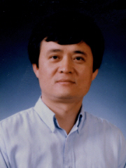

백종진 교수 Prof. Jong-Jin Baik

Education
- 1989 Ph.D. in Atmospheric Science, North Carolina State University, U.S.A.
- 1986 M.S. in Meteorology, Seoul National University
- 1984 B.S. in Earth Science Education, Seoul National University
Work Experiences
- 2007.04 - present Professor, School of Earth and Environmental Sciences, Seoul National University
- 2003.03 - 2007.03 Associate Professor, School of Earth and Environmental Sciences, Seoul National University
- 2001.10 - 2003.02 BK21 Research Associate Professor, School of Earth and Environmental Sciences, Seoul National University
- 2000.02 - 2000.07 Senior Visitor, Department of Applied Mathematics and Theoretical Physics, University of Cambridge, U.K.
- 1995.01 - 2001.08 Associate Professor, Department of Environmental Science and Engineering, Gwangju Institute of Science and Technology
- 1994.01 - 1995.01 Visiting Associate Professor, Center for Climate System Research, University of Tokyo, Japan
- 1993.03 - 1994.01 Senior Scientist, Global Environment Laboratory, Yonsei University
- 1991.04 - 1993.01 Research Scientist, Universities Space Research Association, Severe Storms Branch, Laboratory for Atmospheres, NASA/Goddard Space Flight Center, U.S.A.
- 1990.06 - 1990.08 Visiting Scientist, Hurricane Research Division, Atlantic Oceanographic and Meteorological Laboratory/NOAA, U.S.A.
- 1990.01 - 1991.04 Postdoctoral Fellow, Department of Marine, Earth and Atmospheric Sciences, North Carolina State University, U.S.A.
Major Area
- Cloud and Mesoscale Dynamics
- Computational Fluid Dynamics(CFD)
Articles
Lectures